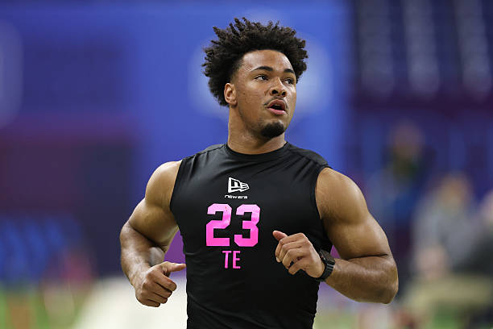
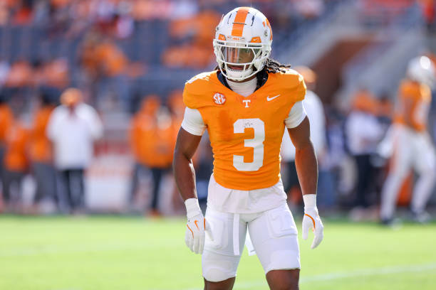
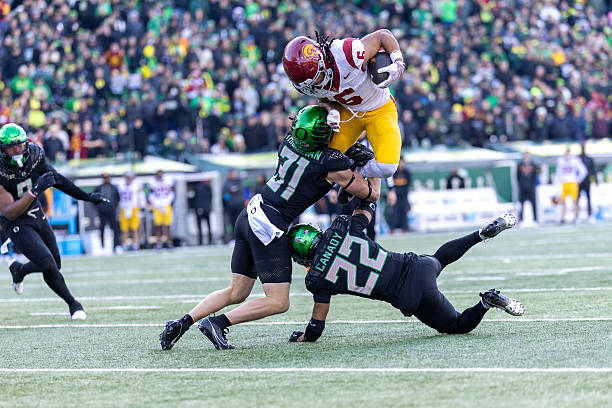

Gilbert Manzano | April 1, 2026
Ever since the combine, one of the biggest talking points surrounding the 2026 NFL draft is the likelihood that teams will care less about positional value than in previous years. There might be only 10 to 12 elite prospects in this draft, and a running back (Jeremiyah Love), an off-ball linebacker (Sonny Styles) and a safety (Caleb Downs) are considered among that group.
However, most teams usually don’t steer too far away from the norm. Just because the better players at the top of the draft happen to play defense doesn’t mean teams will begin to overlook offensive players. Don’t expect them to wait around on a wide receiver despite draft experts saying this group lacks a Ja’Marr Chase-like prospect.
As for another storyline, it’s tough to tell whether NFL teams care much about Rueben Bain Jr. not having ideal arm length to play edge rusher at the next level. Then again, some were making a big deal about Arvell Reese not showing as much bend as Bain during pro day workouts.
You know we’ve reached peak draft season when people are making a big deal out of pro-day performances.
All right, let’s get to my one and only mock draft. I won’t waste my time with trades, but best believe I will take full credit if I get a pairing correct, even though the draft order is wrong.

Oregon TE Kenyon Sadiq running the 40-yard dash at the 2026 Combine (Photo by Stacy Revere/Getty Images)
Acrisure Stadium and its surroundings in Pittsburgh, Pennsylvania, the site of the 2026 NFL Draft | (via Google Maps)
The Raiders and their fan base should be thrilled about grabbing a quarterback who’s very accurate and has a proven track record of delivering in the biggest moments. Maybe Mendoza doesn’t have the strongest arm, but his accuracy and clutch plays will make him a top-15 signal-caller for many years to come. Don’t underestimate the high floor that the Indiana product possesses. That kind of stability is what this franchise has needed for nearly 25 years.
The Jets can’t get caught up in which edge rusher has the most upside or versatility. They need to play it safe because this organization doesn’t have a reputation for unlocking potential and putting players in ideal positions to succeed. As a polished prospect, Bailey can overcome bad coaching and surroundings because he wins his matchups at a frequent rate, evident from his 19.5 tackles for loss and 14.5 sacks last season.
I can certainly see the Cardinals taking a tackle to fill their need on the right side, but new coach Mike LaFleur just spent the past three years watching Rams coach Sean McVay value wide receivers more than offensive linemen. The Cardinals’ future long-term QB, who will probably come from the first round of the 2027 draft, could hit the ground running with a receiving trio of Tate, Marvin Harrison Jr. and Michael Wilson.
Adding Love would give the Titans the perfect offseason. New coach Robert Saleh gained a surplus of defensive talent through free agency, and with his reputation, he’s probably going to deliver a top-12 defense in Year 1. Landing Love here would drastically help with the development of Cam Ward, last year’s No. 1 pick in the draft. The dynamic running back can extend plays as a runner and a pass catcher. Last year, he recorded 1,372 rushing yards with 18 touchdowns, along with 27 catches for 280 yards and three touchdowns.
Don’t expect positional value to matter much at the top of this draft. There are maybe 10 to 12 players who are regarded as blue-chip prospects, and Styles is definitely one of them. New coach John Harbaugh had plenty of success with off-ball linebackers in his 18 years in Baltimore. Landing in New York would help Styles’s development in multiple ways because he wouldn’t be needed to provide fast results with the team recently signing veteran Tremaine Edmunds.
Yes, Mauigoa is viewed as a right tackle prospect, but he’s also considered the best tackle in this class. The Browns could either have him fill their left tackle vacancy or place him on the right side and give newcomer veteran Tytus Howard a shot on the opposite side. The best tackles can play on either side of the line, so playing left tackle shouldn't be a problem for the Miami product if he’s the real deal.
This would be an ideal landing spot for Reese because coach Dan Quinn knows how to unlock raw edge rushers. Reese is more of an off-ball linebacker, but he displayed upside playing on the edge last year with Ohio State, recording 6.5 sacks and 10 tackles for loss. In this scenario, Quinn could do what he did for Micah Parsons during his first three years in the league when they worked together in Dallas.
Most of the top prospects in this draft are on the defensive side, but NFL teams rarely wait around for game-changing wide receivers. Coach Kellen Moore shouldn’t hesitate to add a wide receiver who’s drawing comparisons to Amon-Ra St. Brown. Lemon’s presence can help this offense find another gear to build on what quarterback Tyler Shough accomplished in his promising rookie season.
Bain, with a mini draft slide due to his lack of arm length, would be beneficial for the Chiefs, who lack depth at pass rusher. George Karlaftis is coming off a down season, and Chris Jones is in the back end of his career. Bain’s high motor will make his new team forget that he doesn’t have ideal arm length for the position.
The Bengals won’t be thrilled if Bain, Reese, Styles and Bailey are all off the board by the time they’re on the clock. It wouldn’t be a stretch to say Cincinnati has the worst defensive front in the league, especially after losing Trey Hendrickson in free agency. On the bright side, Downs is the rare kind of defensive back who can help a team at every level of the defense. A special Swiss-Army knife is exactly what this defense has needed for years.
Adding the best cornerback prospect would be a massive get for the rebuilding Dolphins, who desperately need help in the secondary. Delane would immediately be Miami’s best defensive back. He proved at LSU that he’s capable of defending the best wide receivers on a weekly basis, with impressive athleticism and fluid movement.
If McCoy didn’t miss the bulk of the 2025 season due to injury, he might have gotten the same attention as Delane as the best cornerback in this draft. Still, teams won’t overlook what McCoy did in 2024, displaying ball skills and enticing speed. With dreadful defense last season, the Cowboys can’t afford to bet on potential. They need immediate help, and McCoy can provide that if he’s truly healthy heading into the season.

The Rams are a bit of a wild card because they already addressed their biggest need adding cornerbacks Trent McDuffie and Jaylen Watson during free agency. L.A. likely won’t prioritize its future here, because this team clearly is all in on winning a second Super Bowl with Matthew Stafford this season. But the Rams could get the best of both worlds here because Cooper could be a solid third option behind Puka Nacua and Davante Adams before taking over Adams’s snaps beyond 2026.
Teams with multiple pass-catching options at tight end have had plenty of success in recent seasons. Sadiq and Cade Otton, who recently signed a three-year, $30 million extension, could form a productive duo and help account for the loss of wide receiver Mike Evans, who left to sign with the 49ers. Additionally, Otton’s presence would allow Sadiq time to develop.
Jordyn Tyson, WR, Arizona State
It’s rarely a good idea to draft solely out of need, but I have a hard time believing coach Dan Campbell when he told reporters he’s considering moving Penei Sewell from right tackle to the left side. At this point in the draft, it’s better to focus on what’s been established. Freeling flourished at left tackle with the Bulldogs, and Sewell is the best right tackle in the NFL. They could be Detroit’s bookend tackles for many years to come.
Fano’s versatility would be welcomed by the Vikings because of concerns at multiple positions. Guard Donovan Jackson, last year’s first-round pick, struggled as a rookie, and their other guard, Will Fries, has a hefty contract that the team may want out of in the near future. Also, Fano could be an option at tackle because that’s where he mostly played for Utah.
The Panthers could go in various directions after their productive free agency, which included the additions of edge rusher Jaelan Phillips, linebacker Devin Lloyd and offensive tackle Rasheed Walker. Carolina could still use another pass rusher to play behind Phillips and last year’s second-round pick, Nic Scourton. Mesidor had 12.5 sacks playing next to Bain during Miami’s run to the national title game.
With the Cowboys constantly hovering around mediocrity, they’re not going to be in a position to draft a premier edge rusher. They’re going to need to get creative to rebuild that position in the post-Parsons era, along with hitting on their later draft picks. However, Dallas can turn its weak secondary into a strength next year by loading up on defensive backs with its two first-round picks. McNeil-Warren has the skill set to do what Nick Emmanwori did for the Seahawks last season.
The Steelers still need help at tackle despite using first-round picks on Broderick Jones and Troy Fautanu in 2023 and ’24. Both have struggled to find their footing in the NFL. Pittsburgh could bet on Proctor’s potential and give him time to develop while putting pressure on Jones and Fautanu to improve this season. It’s not a bad idea to have a logjam at tackle.
The Chargers’ biggest need is at guard, but all the best available linemen play tackle, and the team doesn’t need help there with the return of Rashawn Slater and Joe Alt. L.A. should pivot and give Justin Herbert another weapon. Boston has good size at 6' 4" and 209 pounds to play X receiver and complement Ladd McConkey, who’s better suited playing on the inside.
GM Howie Roseman has a tendency to get ahead of looming dilemmas. Miller could be the successor to Lane Johnson, who recently committed to playing a 14th season with the Eagles. Miller primarily played right tackle suiting up for the Tigers.
The Browns could use another talented cornerback with Martin Emerson Jr. still unsigned and Denzel Ward heading into his age-29 season. Hood is a feisty defender who stepped up his game while his teammate McCoy missed most of the 2025 season due to injury.
Thieneman is excellent in coverage and can do a lot more than just roam as the center fielder. His versatility, combined with the arrival of Coby Bryant, would give defensive coordinator Dennis Allen two chess pieces in the back end of his defense.

GM Brandon Beane might finally stop hearing about Josh Allen’s lack of weapons if he can add Concepcion after trading for DJ Moore. Concepcion is a dangerous downfield weapon, just like Moore and Khalil Shakir. New coach Joe Brady could have an extensive playbook if Beane can deliver Concepcion to round out the revamped receivers’ room.
Perhaps the 49ers don’t go this route because they’re clearly in win-now mode after acquiring Evans and Osa Odighizuwa in free agency. But they still haven’t fixed their contract dilemma with Trent Williams, and most importantly, he’s not getting any younger as he heads into his age-38 season. With all the injuries in San Francisco last season, it’s not a bad idea to have extra linemen.
Iheanachor’s stock might have gone up recently after Patriots coach Mike Vrabel showed interest in working with him during his pro day. Iheanachor is a raw prospect, but the Texans have time to develop him after signing Braden Smith and getting promising results from 2025 second-round pick Aireontae Ersery.
If the Chiefs can end Day 1 of the draft with Bain and Terrell, then the rest of the league should worry about Kansas City after a down 2025 season—if Patrick Mahomes is healthy enough to start Week 1. Terrell can immediately contribute as a slot cornerback, which is where McDuffie started his career as a 2022 first-round pick for Kansas City.
Malik Willis wouldn’t like this pick, but he should embrace competition. Simpson’s presence could help bring out the best in Willis, and at the same time, Simpson would gain time to find his stride at the next level. No quarterback should rush to play for this roster that was stripped down throughout free agency. Simpson’s stock dipped in the middle of the college season, but he has real upside.
The Seahawks’ secondary took a hit in free agency with the departures of Riq Woolen and Bryant. But DeMarcus Lawrence, who will turn 34 later this month, is the team’s top option at edge rusher. Coach Mike Macdonald prides himself on having depth at every position on his defense.